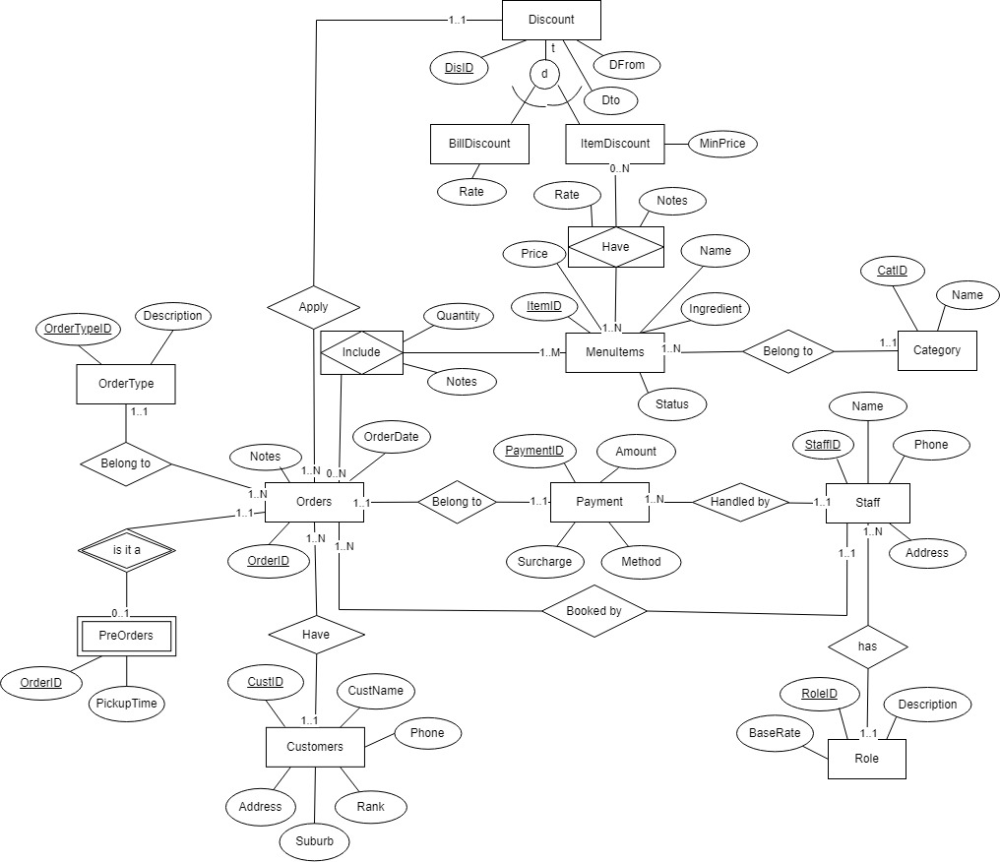
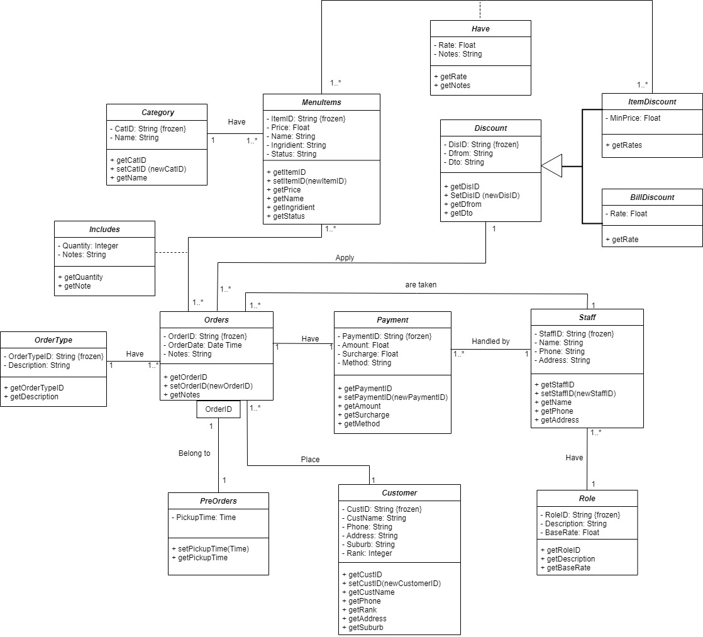
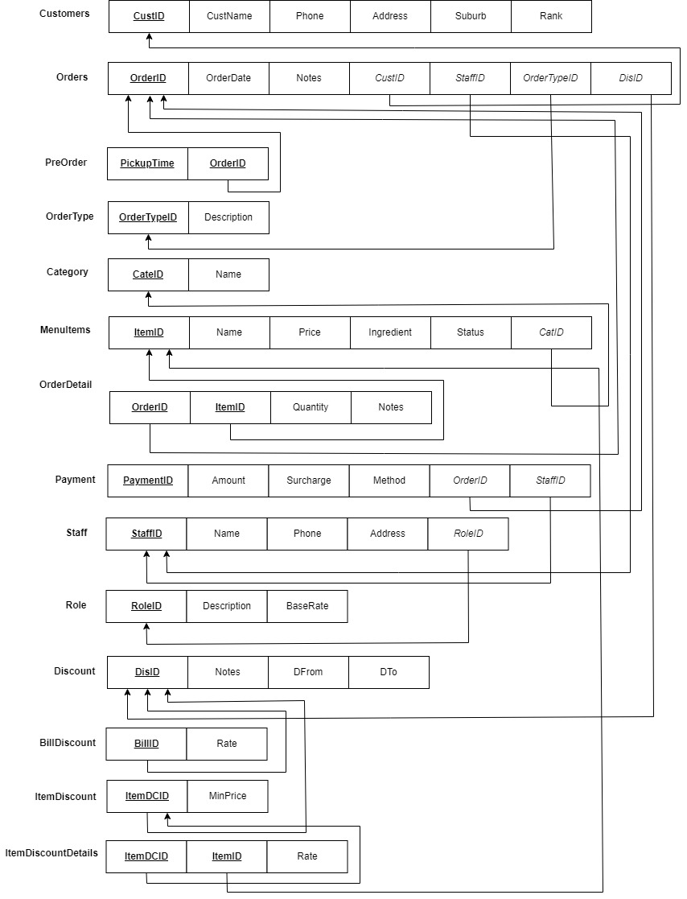
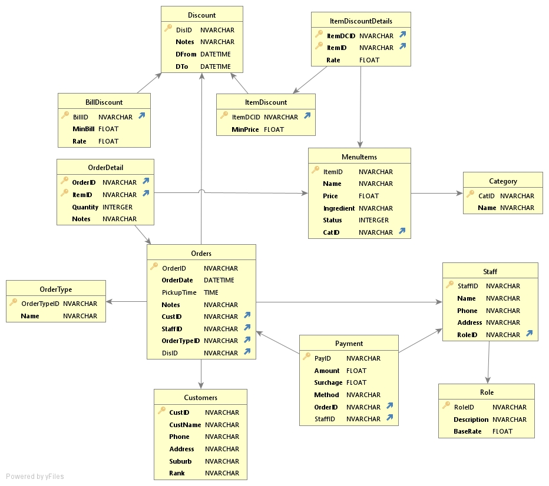

Relational database analysis and design
1. Business Scenario:
Cater Me café is a Vietnamese restaurant located in Winnelie, Northern Territory, Australia. Recently, the business owner aims to expand its operation across the region in the near future. We are a group of four master students looking for a real case study to help enhance its business operation. This is also a part of our assignment in one unit named Advanced data management.
2. Requirement Analysis:
Given the agreement from business owner, we have access to the daily sales reports, business schedules, and organize questionaires and interview with management team to understand current business situation and elicit the requirements for enhancement. The scope for this project is on sales and staff management. The restaurant is currently using SquareUp with a POS system for managing its daily sales. However, it still has some issues to manage orders by channels, discount rate for food items and orders, lack of staff authentication etc. The team has proposed fixed solutions and potential improvements in the new database design
3. Conceptual Modelling:
The Entity relationship and class diagrams are conducted using Chen and UML notation. All the entities and relationship in ER diagrams are converted into logical and relational model at least in 3rd normal form.
Entity relationship diagram
{kind=link}
Class diagram
{kind=link}
Mapping ERD to relational model
{kind=link}
4. Database Implementation:
SQLite and DBVisualizer tools are used to create a database schema. The database transactions are populated using actual sales records collected from the restaurant.
{kind=link}
Github link below is the full source codes of this project including all the design documents and sql scripts.